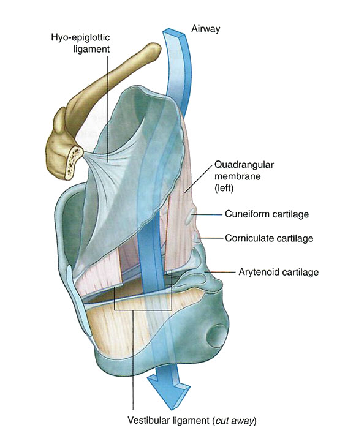

Pharynx and Larynx: Module 2 - Page 4 of 8
×

|  |
| 🔍 Ligaments |
| Add the epiglottis and note the hyo-epiglottic ligament that attaches the epiglottis to the hyoid bone. |
What is the function of the epiglottis? |
|
|
It covers the airway during swallowing to avoid aspiration of food and/or saliva: |
|